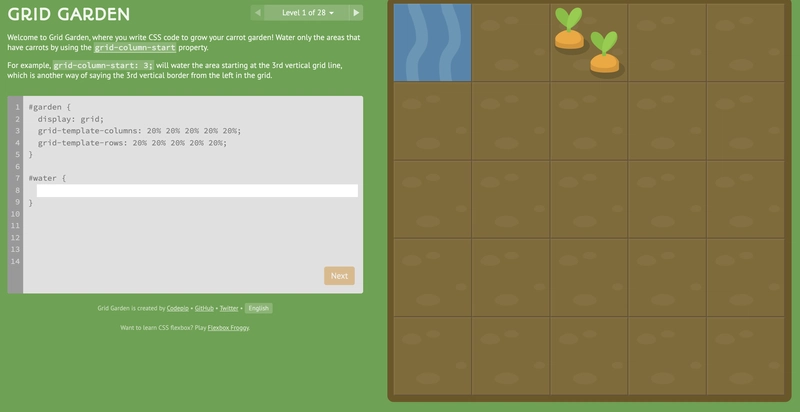

<!DOCTYPE html>
<html lang="pt-br">

<head>
    <meta charset="UTF-8">
    <meta name="viewport" content="width=device-width, initial-scale=1.0">
    <title>Games</title>
    <link rel="stylesheet" href="style (1).css">
</head>

<body>
<div class="container">
    <footer class="footer">
        <div class="button-container">
            <button onclick="history.back()" class="btn"><b>
                    << </b></button>

            <a href="games.html" class="btn home"><b>PÁGINA INICIAL</b></a>

             <a href="games6.html" class="btn"><b> >> </b></a>
        </div>
    </footer>
    <footer class="article">
        <h1>Grid Garden</h1>

        
        <br><br><br>
        <article class="game-card">
            <p>
                Dos mesmos criadores do Flexbox Froggy, o Grid Garden te transforma em um agricultor cuidando de um jardim de cenouras. O desafio é guiar a água até as plantações e o veneno até as pragas usando as regras do CSS Grid. É a ferramenta perfeita para entender de forma bidimensional como funcionam colunas, linhas e o dimensionamento de grades com propriedades.
            </p>
        </article>
    </footer>
</div>
</body>

</html>